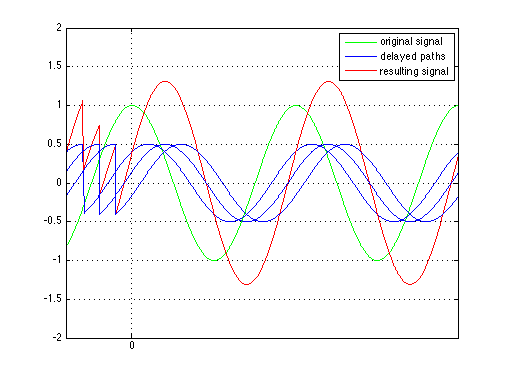

Guard Interval
Copyright 2007 Telecommunications Lab
ts=10^(-3); fs=1/ts; t_guard=.2; t_guard_=t_guard*fs; %Construct two symbols t1=[0:ts:1]; f=2; s1=cos(2*pi*f*t1); s2=cos(2*pi*f*t1); s=horzcat(s1(fs+1-t_guard_:end),s1,s2(fs+1-t_guard_:end),s2); %Channel paths delay=.05; d_s1=zeros(1,length(s)); d_s2=zeros(1,length(s)); d_s3=zeros(1,length(s)); d_s1(length(s1):end)=s((length(s1)-delay*fs):length(s)-delay*fs); d_s1=1/2*(d_s1); d_s2(length(s1):end)=s((length(s1)-2*delay*fs):length(s)-2*delay*fs); d_s2=1/2*(d_s2); d_s3(length(s1):end)=s((length(s1)-3*delay*fs):length(s)-3*delay*fs); d_s3=1/2*(d_s3); %plotting plot(s,'g','LineWidth',1.5);hold on; plot(d_s1,'LineWidth',1.5);hold on; plot(d_s1+d_s2+d_s3,'r','LineWidth',1.5); hold on;plot(d_s2,'LineWidth',1.5);hold on; plot(d_s3,'LineWidth',1.5);legend('original signal','delayed paths','resulting signal') axis([1200 2400 -2 2]);grid on; set(gca,'XTick',[0:1400:24000]); set(gca,'XTickLabel',[' -T_d';' 0 ']) hold off;